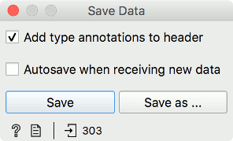
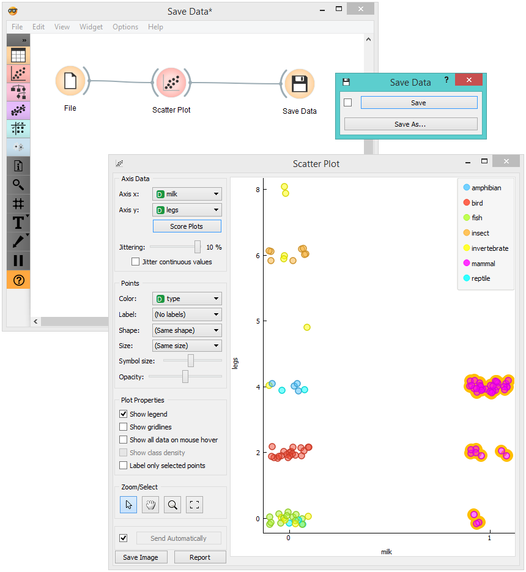

Save Data
Saves data to a file.
Inputs
- Data: input dataset
The Save Data widget considers a dataset provided in the input channel and saves it to a data file with a specified name. It can save the data as:
- a tab-delimited file (.tab)
- comma-separated file (.csv)
- pickle (.pkl), used for storing preprocessing of Corpus objects
- Excel spreadsheets (.xlsx)
- spectra ASCII (.dat)
- hyperspectral map ASCII (.xyz)
- compressed formats (.tab.gz, .csv.gz, .pkl.gz)
The widget does not save the data every time it receives a new signal in the input as this would constantly (and, mostly, inadvertently) overwrite the file. Instead, the data is saved only after a new file name is set or the user pushes the Save button.
If the file is saved to the same directory as the workflow or in the subtree of that directory, the widget remembers the relative path. Otherwise, it will store an absolute path but disable auto save for security reasons.

- Add type annotations to header: Include Orange’s three-row header in the output file.
- Autosave when receiving new data: Always save new data. Be careful! This will overwrite existing data on your system.
- Save by overwriting the existing file.
- Save as to create a new file.
Example
In the workflow below, we used the Zoo dataset. We loaded the data into the Scatter Plot widget, with which we selected a subset of data instances and pushed them to the Save Data widget to store them in a file.
